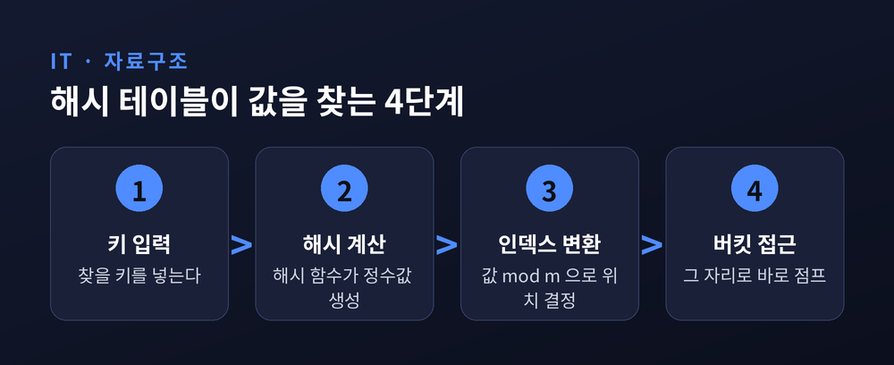
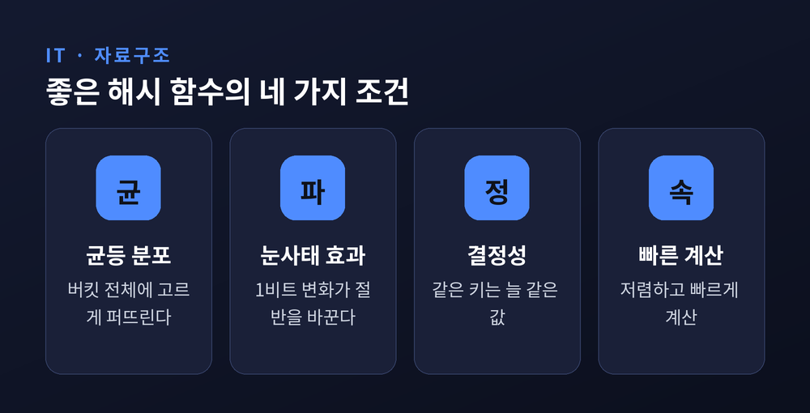
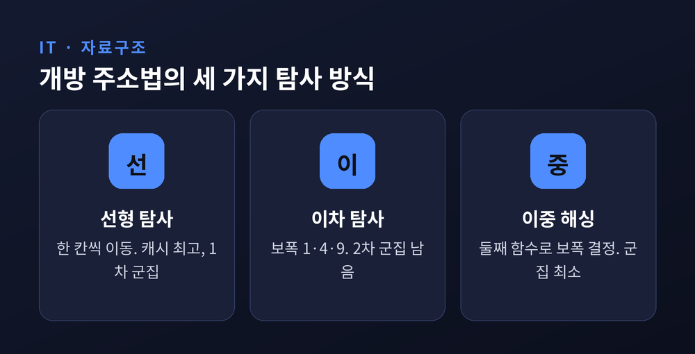
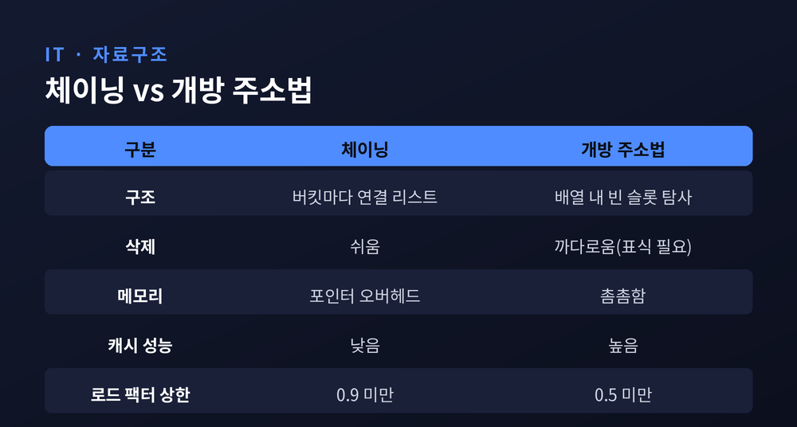
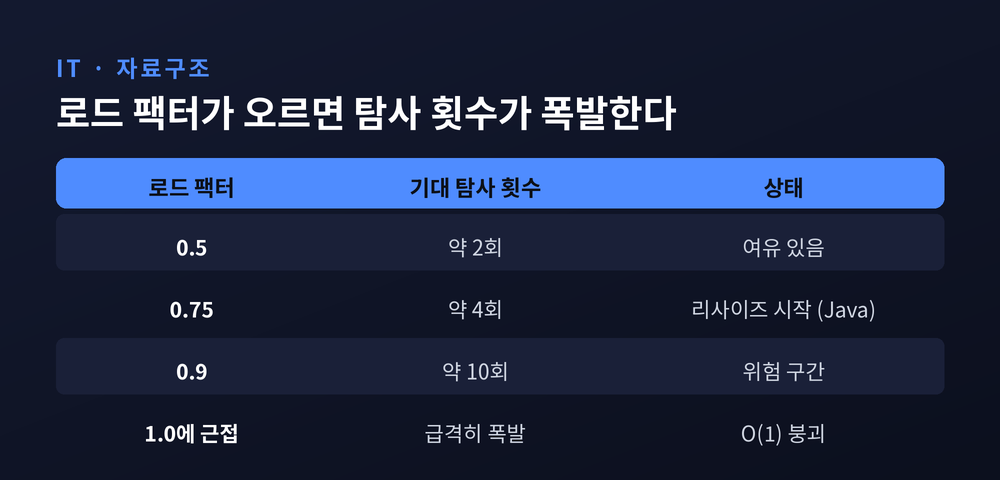

배열에서 원하는 값을 찾으려면 처음부터 하나씩 훑어야 합니다. 그런데 해시 테이블은 원소가 백만 개든 천만 개든, 값 하나를 거의 즉시 꺼내옵니다. 이번 글에서는 그 O(1)이 어떻게 가능한지, 해시 함수와 충돌 해결의 원리를 차근차근 정리해 보겠습니다.
먼저 결론부터 말씀드리면 이렇습니다. 해시 테이블의 O(1)은 "검색을 계산으로 바꾼 것"입니다. 그리고 그 O(1)은 공짜가 아니라, 좋은 해시 함수와 낮은 로드 팩터라는 두 조건을 지켰을 때만 유지되는 평균값입니다.
일반 배열에서 특정 값을 찾는 일은 결국 순회입니다. 운이 나쁘면 끝까지 봐야 하니 최악은 O(n)입니다.
해시 테이블의 발상은 다릅니다. 값을 어디에 둘지 "계산"해 버립니다.
키를 해시 함수(hash function)에 넣으면 정수 하나가 나옵니다. 그 정수를 버킷(bucket) 배열의 인덱스로 삼습니다. 저장할 때도 그 자리에 넣고, 찾을 때도 같은 계산으로 곧장 그 자리로 점프합니다.
순회가 사라지고 한 번의 계산만 남습니다. 이것이 평균 O(1)의 정체입니다.
다만 최악의 경우는 여전히 O(n)이라는 점을 기억해야 합니다. 뒤에서 보겠지만, 모든 키가 한자리로 몰리면 해시 테이블도 결국 리스트 하나를 훑는 신세가 됩니다.

해시 함수는 임의의 키를 정해진 범위의 정수로 바꾸는 장치입니다. 아무 함수나 되는 것은 아닙니다.
첫째, 균등 분포입니다. 결과값이 버킷 전체에 고르게 퍼져야 합니다. 한쪽으로 쏠리면 그만큼 충돌이 늘어납니다.
둘째, 눈사태 효과(avalanche effect)입니다. 입력이 단 1비트만 달라져도 출력의 절반가량 비트가 바뀌어야 합니다. "apple"과 "apples"가 완전히 다른 자리로 흩어져야 좋은 함수라는 뜻입니다.
셋째, 같은 키는 항상 같은 값을 내야 하고, 계산이 저렴해야 합니다.
만드는 방식도 여러 가지입니다. 가장 단순한 것은 나눗셈법으로, 키를 테이블 크기 m으로 나눈 나머지를 씁니다. 이때 m은 2의 거듭제곱과 가까운 값을 피하고 소수(prime)로 잡는 편이 안전합니다. 특정 패턴의 입력에서 충돌이 몰리는 것을 줄여 주기 때문입니다. 곱셈법은 키에 상수를 곱해 소수부만 취하는 방식으로, m 선택에 덜 민감합니다.
실제 프로그램에서는 문자열용으로 다듬어진 함수들이 쓰입니다. DJB2는 짧은 문자열에서 분포가 좋고 빠릅니다. FNV-1a는 처음부터 초고속을 노리고 설계됐습니다. MurmurHash는 분포와 눈사태 효과가 뛰어나 데이터베이스 인덱싱이나 분산 시스템에 널리 쓰입니다. MurmurHash3는 초당 약 2.4GB를 처리할 만큼 빠릅니다. 다만 이들은 보안용 암호 해시가 아니라, 속도와 분산을 노린 비암호학적 해시라는 점은 구분해야 합니다.

여기서 근본적인 한계가 하나 있습니다. 키의 종류는 사실상 무한한데, 버킷의 수는 유한합니다.
서로 다른 두 키가 같은 인덱스로 떨어지는 일, 곧 충돌(collision)은 반드시 일어납니다. 비둘기집 원리 그대로입니다. 생일 역설이 보여주듯, 자리가 넉넉해 보여도 충돌 확률은 생각보다 빨리 커집니다.
그래서 해시 테이블 설계의 절반은 해시 함수가 아니라 "충돌을 어떻게 감당하느냐"에 달려 있습니다. 해결법은 크게 두 갈래로 나뉩니다.
첫 번째는 분리 연결법, 흔히 체이닝(separate chaining)이라 부릅니다. 각 버킷이 연결 리스트를 가리키게 하고, 충돌한 원소들을 그 리스트에 매답니다. 구현이 단순하고 삭제가 쉽습니다. 한 키를 지워도 다른 키에 영향이 없기 때문입니다. 로드 팩터가 1을 넘어도 동작한다는 것도 장점입니다. 대신 노드마다 포인터가 붙어 메모리를 더 쓰고, 캐시 지역성이 떨어집니다.
두 번째는 개방 주소법(open addressing)입니다. 별도 리스트 없이, 배열 안의 다른 빈 슬롯을 찾아 넣습니다. 어디를 볼지 정하는 규칙을 탐사(probing)라 합니다.
탐사에는 세 가지 방식이 대표적입니다. 선형 탐사는 한 칸씩 옆으로 이동합니다. 캐시 성능은 가장 좋지만, 원소가 한군데 길게 뭉치는 1차 군집(primary clustering)이 생깁니다. 이 현상은 도널드 커누스가 1963년에 처음 분석한 오래된 문제입니다. 이차 탐사는 1, 4, 9처럼 보폭을 점점 키워 1차 군집은 피하지만, 2차 군집이 남습니다. 이중 해싱은 두 번째 해시 함수로 보폭을 정해 군집을 가장 잘 없앱니다. 개방 주소법 중에서는 최선으로 평가받습니다.
개방 주소법은 포인터가 없어 캐시에 친화적이고 메모리가 촘촘합니다. 대신 삭제가 까다롭습니다. 슬롯을 그냥 비우면 탐사 경로가 끊기므로, 삭제 자리에 표식(tombstone)을 남겨야 합니다.


이제 처음의 약속으로 돌아옵니다. O(1)은 어떤 조건에서 유지될까요.
핵심 지표는 로드 팩터(load factor)입니다. 원소 수를 버킷 수로 나눈 값입니다. 50개가 100칸에 들어 있으면 0.5입니다. 이 값이 낮을수록 여유가 있어 충돌이 적고, 높을수록 자리가 빽빽해 충돌이 잦아집니다.
숫자로 보면 더 분명합니다. 커누스의 분석에 따르면, 실패 탐색의 기대 탐사 횟수는 대략 1/(1−α)에 비례합니다. 로드 팩터 α가 0.5면 약 2회, 0.75면 4회, 0.9면 무려 10회로 뜁니다. α가 1에 가까워질수록 비용이 폭발한다는 뜻입니다.
그래서 권장 상한이 방식마다 다릅니다. 개방 주소법은 0.5 미만, 체이닝은 0.9 미만이 권장됩니다. 자바의 HashMap은 기본 로드 팩터를 0.75로 두고, 이 선을 넘으면 리사이즈에 들어갑니다.
이때 벌어지는 일이 리해싱(rehashing)입니다. 보통 버킷 수를 두 배로 늘린 새 테이블을 만들고, 기존 원소를 전부 새 크기에 맞춰 인덱스를 다시 계산해 옮깁니다. 이 작업 한 번은 O(n)이지만, 자주 일어나지 않으므로 분할상환하면 삽입당 평균은 여전히 O(1)로 유지됩니다.

이론만으로는 최악의 O(n)이 마음에 걸립니다. 실제 언어들은 여기에 안전장치를 덧붙였습니다.
자바의 HashMap은 기본은 체이닝이지만, 한 버킷의 노드가 8개를 넘으면 연결 리스트를 레드-블랙 트리로 바꿉니다. 최악의 버킷 탐색을 O(n)에서 O(log n)으로 끌어내리는 장치입니다. 리사이즈 과정에서 노드가 6개 아래로 줄면 다시 리스트로 되돌립니다.
파이썬의 딕셔너리는 개방 주소법을 씁니다. 단순한 선형 탐사가 아니라 의사난수 탐사에 가까워, 군집을 흩뜨립니다. 로드 팩터가 2/3를 넘으면 테이블을 키웁니다. 나아가 악의적으로 충돌을 유발하는 해시 플러딩 공격을 막기 위해, 시드를 섞은 방어적 해시를 쓰기도 합니다.
정리하면 이렇습니다. 해시 테이블의 O(1)은 마법이 아니라 설계입니다. 해시 함수가 검색을 계산으로 바꾸고, 충돌은 체이닝과 개방 주소법으로 감당하며, 로드 팩터를 낮게 지켜야 비로소 그 평균이 성립합니다.
"O(1)은 결과가 아니라 약속입니다. 그 약속을 지키는 것은 결국 좋은 해시 함수와 절제된 로드 팩터입니다."
다음에 코드에서 map이나 dict를 무심히 쓰게 되신다면, 그 한 줄 뒤에서 이 세 가지가 조용히 균형을 잡고 있음을 떠올려 보시면 좋겠습니다.